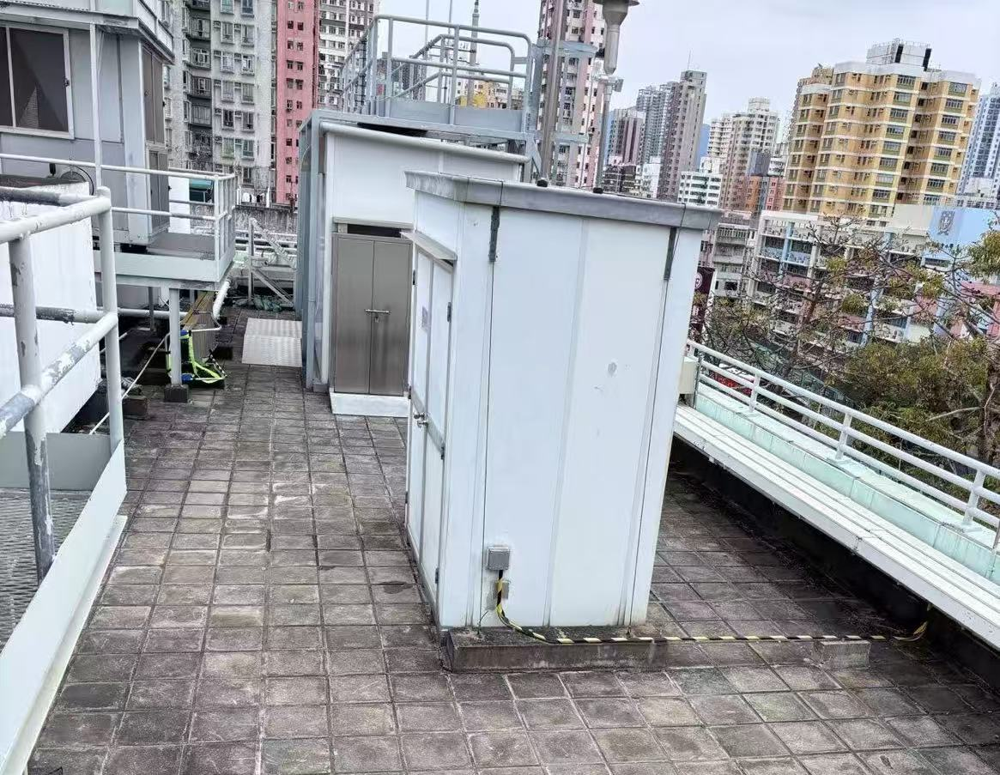

← All data

- Sampling period
- 13/12/2024 - 13/1/2025
- Sampling location
- Yuen Long Air Quality Monitoring Station - Hong Kong, China
- Geographic coordinates
- 22°26′43″ N, 114°1′21″ E
- Equipment
- LOPAP-O3 (QUMA Elektronik & Analytik GmbH)
- Data size
- 620 hourly data
- Related data
- Trace gases (NO2, O3, SO2), particulate matter (PM2.5, PM10), HCHO, CH4, Air moisture content on 32 days